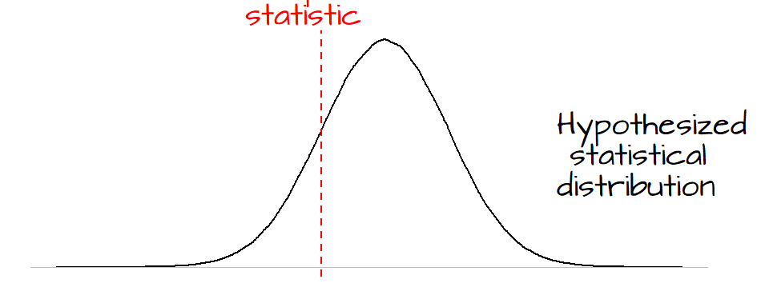
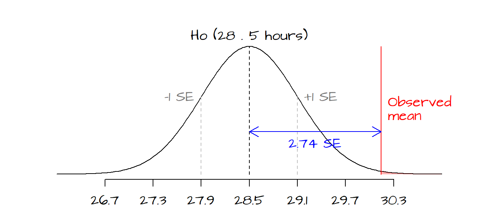
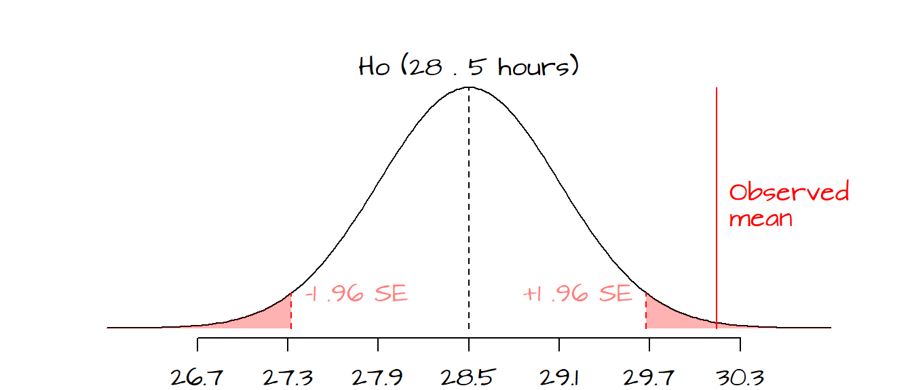
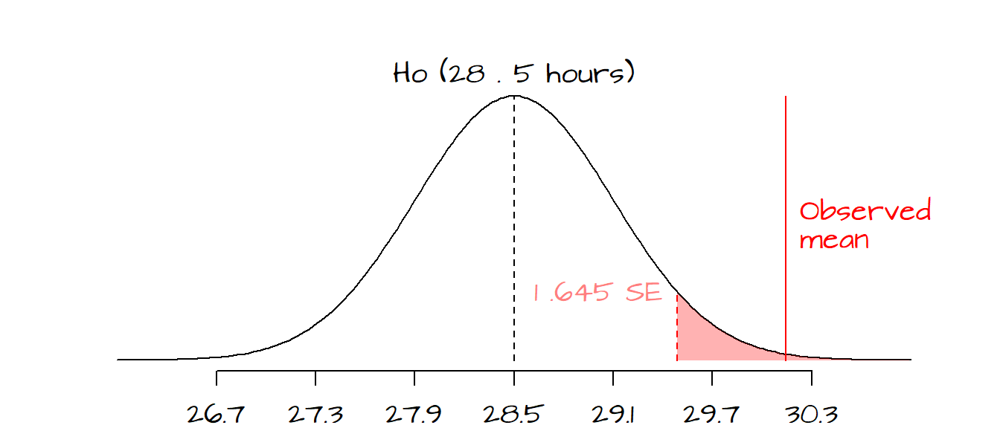
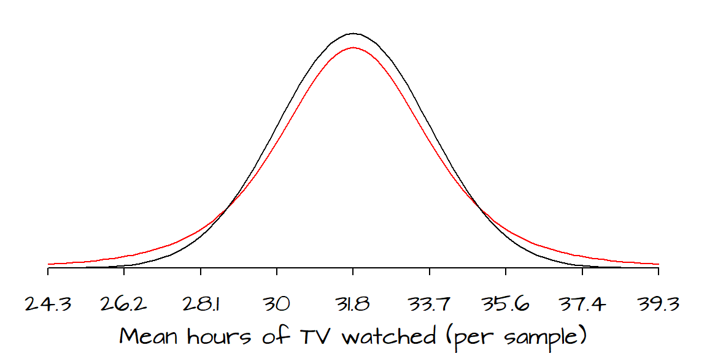
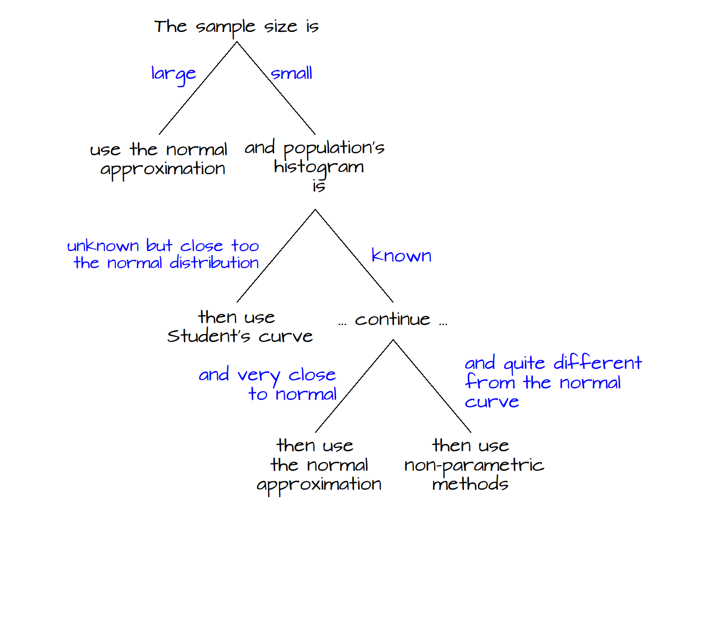
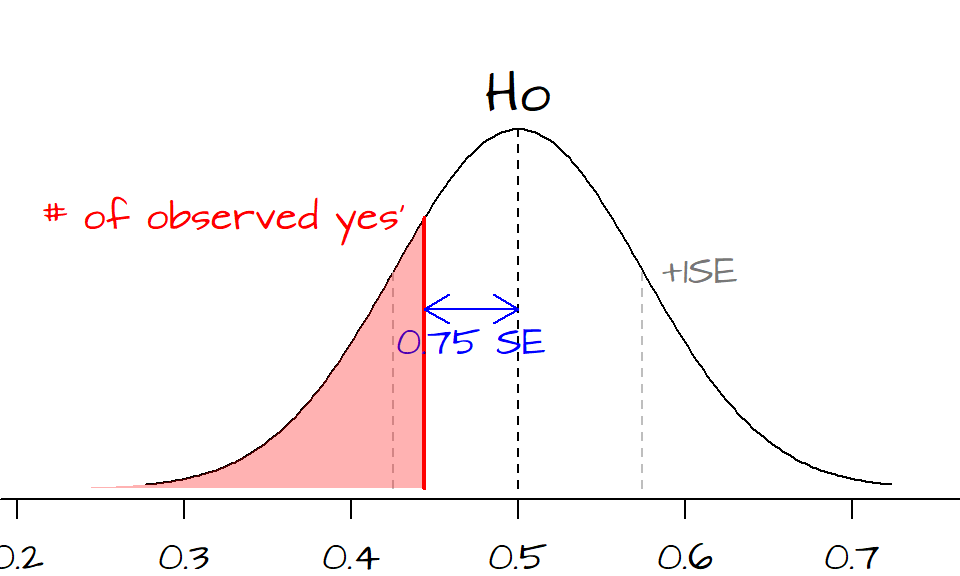
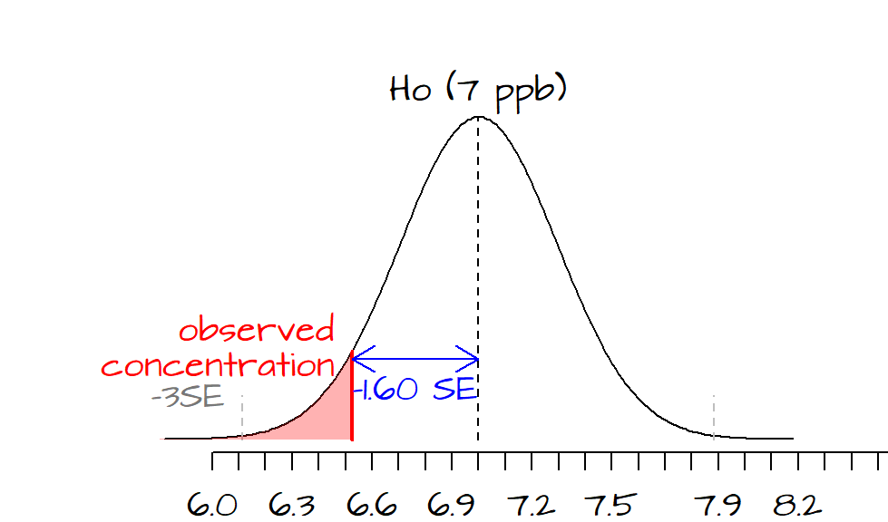
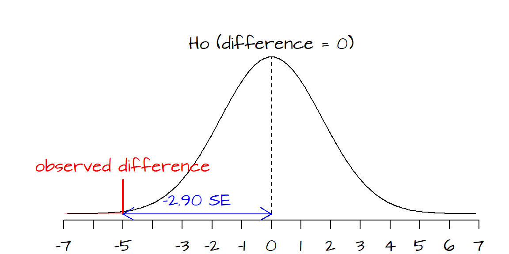
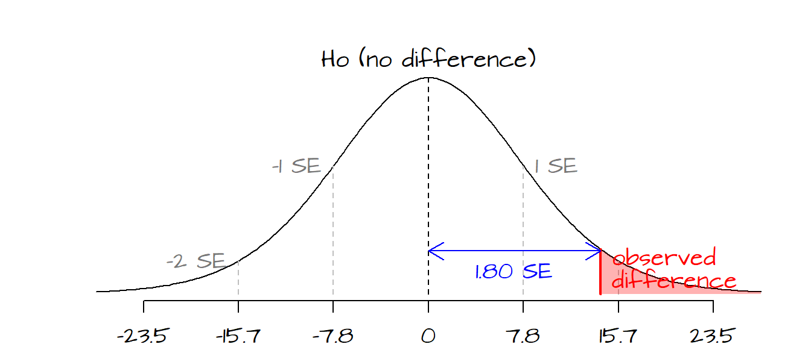

Comparing means: z and t tests
Last modified on 2022-09-12
1 Tests of Significance (single sample inference)
Suppose that we want to hypothesize that the mean number of TV hours watched per week is 28.5; we’ll define this as our null hypothesis, \(H_o\). Let’s also assume that we only have access to a subset of household data (i.e. a sample), \(x\),
x <- c(25.7, 38.5, 29.3, 25.1, 30.6, 34.6, 30.0, 39.0, 33.7, 31.6,
25.9, 34.4, 26.9, 23.0, 31.1, 29.3, 34.5, 35.1, 31.2, 33.2,
30.2, 36.4, 37.5, 27.6, 24.6, 23.9, 27.0, 29.5, 30.1, 29.6,
27.3, 31.2, 32.5, 25.7, 30.1, 24.2, 24.1, 26.4, 31.0, 20.7,
33.5, 32.2, 34.7, 32.6, 33.5, 32.7, 25.6, 31.1, 32.9, 25.9)from which we can estimate the population mean and the standard error of the sample mean as:
mean.x <- mean(x)
SE.x <- sd(x) / sqrt(length(x))The arithmetic mean of \(x\) is 30.14 which is slightly different from our hypothesized value of 28.5. This begs the question: is this difference significant, or is it due to chance variation alone? This question will be addressed in the following subsections.
1.1 The null and the alternative hypotheses
The objective of hypothesis testing is to assess whether the observed data are consistent with a well specified (hypothesized) random process, \(H_o\). Note that when we mean random here we are not inferring complete randomness but some random variation about a central value. Freedman et al. (2007) define The null and alternative hypotheses as follows:
The null hypothesis corresponds to the idea that an observed difference is due to chance… The alternative hypothesis corresponds to the idea that the observed difference is real.
\(Ho\) is a statement about the true nature of things. To assess whether our observed data are consistent with our null hypothesis we seek to compare our data with the hypothesized value .

In essence, we compare our observed data (usually as a statistical summary) to the hypothesized distribution using a test statistic from which a test of significance is calculated (this tells us how likely our observed statistic agrees with our hypothesized process). These, and derived concepts, are highlighted in the subsequent sections.
1.2 Test statistics
A test statistic is a numerical summary of the data that is compared to what would be expected under the null hypothesis. Test statistics can take on many forms such as the z-tests (usually used for large datasets) or t-tests (usually used when datasets are small).
1.3 \(z\)-tests
The \(z\)-statistic is a measure of how much an observed statistic differs from an expected statistic put forward by the null hypothesis. It is computed as
\[ z = \frac{observed - expected}{SE} \]
In computing the \(z\)-statistic, the \(SE\) used is not the standard error of the observed data, but the standard error for the null. To be more precise, the \(SE\) in this formula is computed from the null’s \(SD\), if given. However, in many cases (such as in this working example) the null’s \(SD\) can only be estimated from the observed data’s \(SD\).
For example, the \(z\)-statistic for our scenario is:
Ho <- 28.5
z <- (mean.x - Ho) / SE.xwhere SE.x is the observed sample’s standard error. In our working example, \(z\)’s value of 2.74 indicates that the sample mean is 2.74 \(SE\) ’s away from the hypothesized value.

The red line shows where our observed statistic (mean number of TV hours watched) lies on the hypothesized distribution of mean values defined by \(H_o\). The grey dashed lines represent 1 \(SE\) to the left and to the right of the hypothesized mean. Each tic mark interval represents a standard deviation. From the graph, it appears that the observed mean value of 30.14 is almost 3 \(SE\)’s away from the hypothesized mean of 28.5. If we were to draw many samples from the population described by \(H_o\) (i.e. a population whose mean number of TV hours watched equals 28.5), only a small fraction of the sample means would produce a \(z\)-value more extreme than the one calculated from our dataset. The area shaded in light red highlights the probability of \(z\)-values being more extreme than the one computed from our sample. We can quantify this probability \(P\) by looking up its value in a Normal distribution table (the old fashion way), or more simply, by passing the \(z\) parameter 2.74 to the R function pnorm.
The pnorm function gives us the probability of a \(z\) value “greater than” or “less than” the \(z\) value computed from our data. In this case, we are interested in knowing the probability of having \(z\) values more extreme than the one computed. Since our \(z\) value is on the right side of the distribution curve, we will invoke the option lower.tail=FALSE to ensure that the probability returned is for the right tail-end section of the distribution (the pink area in the preceding figure).
P.Ho <- pnorm(z, lower.tail=FALSE)
P.Ho[1] 0.003071959Here, \(z\) is on the right side of the curve and the probability of getting a test statistic more extreme than our \(z\) is about 0.003 or 0.31% . \(P\) is called the observed significance level and is sometimes referred to as the \(P\)-value. The smaller this probability, the stronger the evidence against \(Ho\) meaning that the odds of the mean TV hours watched per household being 28.5 is very small. Careful, \(P\) is not the chance of \(Ho\) being right, such statement is prevalent but is wrong.
Sometimes researchers will define a \(P\) value for which \(Ho\) will be rejected. Such value is usually referred to as the \(\pmb{\alpha \; value}\). If such a test is requested, we must determine if the test is one-tailed or two-tailed. A test is one-tailed if the alternate hypothesis, \(H_a\), is of the form “greater than” or “less than” (e.g. the mean number of TV hours watched are greater than 28.5). A test is two-tailed if \(H_a\) is not of the form “greater than” or “less than” (e.g. the mean number of TV hours watched differs from 28.5). Here are a few examples:
- If we chose an \(\alpha\) value of 0.05 and we wanted to test the hypothesis that our observed mean hours is different than \(H_o\) we would define a two-tailed test, meaning that we would have to define rejection regions associated with \(P\) values of less than 0.025 and greater than 0.975 (or \(z\) values of -1.96 and 1.96 respectively). The reason we choose \(p\) values of 0.025/0.975 and not 0.05/0.95 is because we need to split the 0.05 \(\alpha\) value across both tails of the curve (remember that we are rejecting the null if our \(z\) value falls in either tails of the curve).

- If we chose an \(\alpha\) value of 0.05 and we wanted to test the hypothesis that our observed mean hours is greater than \(H_o\), we would define a one-tailed test, meaning that we would have to define a rejection region associated with a \(P\) value greater than 0.95.

In our working example, if we had chosen a two-tailed test, we would reject the null at a 5% and 1% \(\alpha\) value (these would represent rejection regions associated with \(z\) values of +/- 1.96 and +/- 2.58 respectively). However, if our \(\alpha\) value was set at 0.005 (0.5%), we could not reject the null hypothesis since the \(z\)-value associated with a two-tailed test for \(\alpha\)=0.005 is 2.81 (greater than our observed \(z\) value of 2.74).
The following table highlights popular \(\alpha\) values and their associated \(z\) values for a one-tailed and two-tailed test:
| \(\small\alpha=0.1\) | \(\small\alpha=0.05\) | \(\small\alpha=0.01\) | \(\small\alpha=0.005\) | |
|---|---|---|---|---|
| 1-tailed | -1.28 or 1.28 | -1.645 or 1.645 | -2.33 or 2.33 | -2.58 or 2.58 |
| 2-tailed | -1.645 & 1.645 | -1.96 & 1.96 | -2.58 & 2.58 | -2.81 & 2.81 |
Note that the one-tailed test requires that only one condition be met (only one of the rejection regions is of concern) whereas a two-tailed test requires that two conditions be met (both rejection regions are of concern).
It’s important to note that the \(z\)-test makes some restrictive assumptions: * the sample size is reasonably large * the normal (Gaussian) distribution can be used to approximate the distribution of the sample statistic (e.g. the mean) being investigated.
An alternative to the \(z\)-test, the \(t\)-test, is discussed in the following section.
1.4 \(t\)-tests
When working with small sample sizes (typically less than 30), the \(z\)-test has to be modified. For starters, the shape of the sampling distribution (i.e. the distribution of means one would compute from many different samples from the same underlying population) now depends on the shape of the underlying population distribution which must therefore be approximately normal in shape. These requirements can be quite restrictive because in most cases we do not know the population’s distribution.
Continuing with our working example, let’s assume that instead of a sample size of 50 we now have a sample size of 10.
x2 <- c(37.13, 32.02, 26.05, 31.76, 31.90, 38.62, 21.63, 40.75, 31.36, 27.01)Next we compute the mean and standard deviation of the sample. Note that the standard deviation can be computed in one of two ways: \(TSS/\sqrt{n}\) or \(TSS/\sqrt{n-1}\) where \(TSS\) is the total sum of squares, \(\sum{(x - \bar{x})^2}\), and \(n\) is the sample size. The latter formulation of \(sd\) (i.e. the one with the \(\sqrt{n-1}\) in the denominator) is recommended for small sample sizes but can be used for large sample sizes as well. R’s sd() function is computed using the \(\sqrt{(n-1)}\) denominator. This is what we want to use with our small sample.
mean.x2 <- mean(x2)
sd.x2 <- sd(x2) Next, we compute the standard error. Recall that the standard error tells us something about the confidence in the range of mean values (or some other statistic) for the underlying population based on our sample; it’s not a measure of spread of our sample data.
SE.x2 <- sd(x2) / sqrt(length(x2)) The next step is to find the \(P\)-value. When working with large sample sizes, the normal (Gaussian) distribution curve does a good job in approximating the distribution of a sample statistic (such as the mean). It does not, however, do a good job in approximating the distribution of that same statistic when these are computed from small sample sizes.

The black line represents the distribution of the mean hours (from many hypothetical samples) of TV watched as approximated by the normal curve. The red line represents the same parameter but represented this time by a student distribution curve with a degree of freedom, \(df\), of 4. The \(df\) is computed by subtracting 1 from the total number of data points in the sample.
By convention when computing a test statistic for small sample sizes (and when a student curve is used), we refer to the test statistic as the \(t\) statistic (or \(t\) value). For our dataset \(t\) can be computed as follows:
t.val <- (mean.x2 - Ho) / SE.x2Here, we make a point not to name the \(t\) value t in our code since R has a function with the same name, t() (a matrix transpose function). Had we named our variable t, than that variable name would have masked the internal function t(). This would not have been a big deal for our working example since we won’t be using the transpose function, but it’s good practice to use variables not already in use in R.
The next step is to compute the \(P\)-value. We will compute \(P\) using both the normal distribution curve (which we normally do for a large sample) and Student’s curve (which is recommended for a small sample).
P.Ho.norm <- pnorm(t.val, lower.tail=FALSE)
P.Ho.stud <- pt(t.val, df = length(x2) - 1, lower.tail = FALSE)The \(P\)-value computed from the normal curve is 0.038 and that computed from Student’s curve is 0.055. If an \(\alpha\) value of 5% was requested, the normal distribution approximation would suggest that chance variation alone could not explain the discrepancy between our hypothesized mean number of TV hours watched and that computed from our sample. Yet, if Student’s approximation of the distribution is used (as it should be with the small sample), we could not reject the null (at least not at the 5% significance level).
The following figure summarizes the decision tree one should follow in deciding which curve to use when calculating a \(P\)-value. This figure is adapted from Freedman et al. (p. 493).

Many textbooks only cover the \(t\)-test and not the \(z\)-test. In fact , you may not find a \(z\)-test implementation in some statistical software. This is because the \(t\)-test results will converge with the \(z\)-test results as the sample size gets larger.
1.5 Follow-up examples
1.5.1 Problem 1
You conduct a survey where the respondent is to answer yes or no to a question. Of the 45 respondents, 20 answer yes. You want to know if the percentage of yes’ is significantly different from an expected value of 50%.
1.5.2 Solution to problem 1
The data can be treated as a binomial proportion where the fraction of yes’ in our sample is \(\hat{p} = 20/45 = 0.444\) and the fraction of no’s is \(\hat{q} = 1 - \hat{p} = 1 - 0.444 = 0.555\) (the \(\hat{ }\) symbol reminds us that these are estimate fractions of the true yes’ and no’s in the overall population). The hypothesis \(H_o\) is that the number of yes’ in the population equals the number of no’s or \(p_o = q_o = 0.5\).
We first need to compute \(SE_{Ho}\) (The standard error for the null and not the observed data). In this example, the standard deviation of the null hypothesis is given to us since we are told what the proportion of yes’ and no’s should be equal to in the hypothesized population (i.e. we know that the hypothesized population has 22.5 yes’ and 22.5 no’s). If we could not glean a standard deviation from the null, we would therefore have to rely on the sample’s \(SD\) instead. \(SE_{Ho}\) can be computed as follows.
\(SE_{Ho} = \sqrt{ \frac{\displaystyle (fraction\; of\; yes')(fraction\; of\; no's)}{\displaystyle n}}=\sqrt{\frac{\displaystyle (0.5)(0.5)}{\displaystyle 45}}=0.075\).
A way to interpret \(SE_{Ho}\) is to say that if many surveys of 45 people were collected from a population defined by the null (i.e. a population where the number of yes’ equals the number of no’s), 68% of the fraction of yes’ would fall between \(q_o - 1SE_{Ho}\) and \(q_o + 1SE_{Ho}\) or between the interval defined by the fractions (0.425, 0.575) or (42.5%, 57.5%).
Next, we compute the test statistic, \(z\):
\(z = (\hat{p} - p_o)/SE_{Ho} = (.444 - 0.5)/0.075 = -0.75\),
The observed fraction of yes’ is 0.75 \(SE\)’s below the expected count of 22.5 (or 0.5 yes’).

Since the sample size is relatively large, we can compute the \(P\)-value using the normal curve approximation using the function pnorm(0.75, lower.tail=FALSE) = 0.2266274.
The entire R analysis for this example can be completed as follows:
n <- 45 # number of individuals surveyed
p <- 0.444 # The fraction of yes'
q <- 1 - p # The fraction of no's
ho <- 0.5 # The null hypothesis
SEo <- sqrt(0.5 * 0.5 / n) # The standard error for Ho sample distribution
z <- ( p - ho ) / SEo # The z-statistic
P.z <- pnorm(z, lower.tail=TRUE) # Get the probabilityNote that in the last line of code we set lower.tail to TRUE since we are interested in the portion of the curve to the left of our test statistic. Had \(z\) turned out positive (indicating that our observed fraction of yes’ is greater than expected under the null), we would have focused on right tail of the curve (i.e. setting lower.tail to FALSE).
Hence, there is a 23% chance that the fraction of yes’ one could expect to measure under \(H_o\) could be more extreme than the one observed or, put differently, if 100 investigators were to conduct their own survey of 45 people from a population whose number of yes’ equals the number of no’s, 23 of the survey results would have a percentage of yes’ more extreme than ours. So our observed fraction of yes’ is consistent with what one would expect under the null hypothesis. It would probably be safe then to state that we cannot reject the null hypothesis.
1.5.3 Problem 2
Aldicarb, a pesticide substance, is measured from a sampling well 4 times over the course of a season. The concentrations measured are 6.3, 7.1, 5.8 and 6.9 ppb (parts per billion). The maximum contaminant level (MCL) has been set at 7 ppb. We want to determine if the average concentrations observed are less than the MCL of 7 ppb at the 99% significance level.
1.5.4 Solution to problem 2
The question asks if the true mean concentration (from the four measurements) is less than or equal to 7 ppb. We do not have the luxury of monitoring this concentration continuously so we must contend with just four observations. These four observations are random variables that can be expected to fluctuate around the true mean concentration of the well (a value we are not privy to). We are hypothesizing that the true mean concentration is less than 7 ppb. We want to compare our observed mean concentration to the range of mean concentrations we could expect if we were to sample (with four concentration measurements) from a well whose mean concentration is indeed 7 ppb. If our observed concentration is not consistent with what we would expect to measure from a well whose true concentration is 7 ppb, we can than state that the true mean concentration of aldicarb in the well is less than 7 ppb.
This problem differs from the last one in that we are interested in a different parameter: the mean (of a concentration) instead of the fraction. It also differs from the last problem in that we are now defining a cutoff probability (aka a rejection region) of 0.99. In the last exercise, we were only seeking the probability of finding a test statistic more extreme than expected under a null (and thus leaving the interpretation of what is significant up to someone else).
We need to compute the mean of the observed concentrations, \(\hat{\mu}\), and the standard error of the mean concentrations we would observe if the null was the true state of things, \(SE_{Ho}\). For the latter, we do not know the actual standard deviation of the null distribution (this is another difference between this example and the previous example where the standard deviation–and thus the standard error–was gleaned directly from null). We will therefore assume that \(SD\) of the null is the same as \(SD\) from our observed data. Note that we must therefore assume that the distribution of aldicarb sample mean concentrations follows a normal curve!
\(\hat{\mu} = \frac{\displaystyle 6.3 + 7.1 + 5.8 + 6.9}{\displaystyle 4}=6.525\)
\(SE_{Ho} = \frac{\displaystyle SD_{wells}}{\sqrt{ \displaystyle n}}=\frac{\displaystyle 0.591}{\displaystyle \sqrt{4}} = 0.295\).
Note that we are using the \(SD\) formula for small samples (i.e. the one with the \(\sqrt{n-1}\) denominator) which just happens to be what R defaults to.
The test statistic, \(t\) is computed as follows:
\(t = (\hat{\mu} - \mu_o)/SE_{Ho} = (6.525 - 7)/0.295 = -1.6\),
\(t\) is negative implying that our observed concentration is to the left of the hypothesized value of 7. In this example, a 99% confidence interval implies that our observed mean concentration of 6.5 ppb should be at least 3 \(SE\)’s to the left of our MCL of 7 ppb.

This dataset is very small (only 4 observations). This implies that we will want to use the student curve as opposed to the normal curve when we calculate the the \(P\)-value.
x <- c(6.3, 7.1, 5.8, 6.9) # the four observed concentrations
n <- length(x) # number of observations
mu <- mean(x) # the mean concentration
ho <- 7 # The null hypothesis
SEo <- sd(x) / sqrt(n) # The standard error for Ho sample distribution
t <- ( mu - ho ) / SEo # The t-statistic
P.z <- pt(t, df = n - 1, lower.tail = TRUE)# Get the probabilityP.z returns a value of 0.10, or 10%. In other words, 10% of the mean concentrations from samples collected from a well whose (hypothesized) mean concentration is 7 ppb could be less than our observed concentration. This implies that our observed concentration could well be from a well whose concentration hovers around 7 ppb. If that’s the case, and we were to collect more samples from the well, we could have values greater than 7 ppb (recall that the curve centered on 7 ppb represents the probability distribution of mean concentrations centered on 7 ppb). Given our \(P\) value of 0.1, we cannot reject the null and therefore cannot state that our observed concentration is less than 7 ppb at a 99% significance level.
1.6 Using the built in t.test function
The six or seven lines of code used to compute the \(t\)-test can easily be replaced with R’s t.test() function. Using example 2, we can compute the t-test as follows:
t.test(x, mu=7, alternative="less", conf.level= 0.99)Let’s look at the t.test() parameters. mu is the hypothesized mean value. alternative determines if the test is is two-tailed (="two.sided") or one-tailed (="less" or ="greater"). The less option gives use the probability to the left of our test statistic while the greater option gives us the probability to the right of our test statistic. conf.level determines the alpha level set for \(P\).
Now let’s look at the output.
One Sample t-test
data: x
t = -1.6077, df = 3, p-value = 0.1031
alternative hypothesis: true mean is less than 7
99 percent confidence interval:
-Inf 7.866558
sample estimates:
mean of x
6.525 The output variables are, for the most part, self-explanatory. The value \(t\) is the same as the one computed earlier. The \(P\) value here gives us the probability to the left of our test statistic.
2 Tests of Significance (two independent samples comparison)
Up to now, we have focused on inferences about single samples. We will now focus on comparing two independent samples using test statistics. The approach is very much the same except that we are no longer comparing a sample statistic to an external standard but to another sample statistic.
2.1 \(z\) test with two samples (large sample sizes)
If the sample sizes in both samples are large (usually more than 30), then a \(z\) test is appropriate. The \(z\) statistic is computed as follows:
\[ z = \frac{observed\; difference - expected\; difference}{SE\; for\; difference} \]
The standard error for the difference of the two samples is:
\[ SE = \sqrt{SE_{sample\; 1}^2 + SE_{sample\; 2}^2} \]
2.1.1 Example
The National Assessment of Education Progress (NAEP) administered a reading test for 17 year-olds in 1990 and 2004. The average score was 290 and 285 respectively; a slight decrease over the course of 14 years. The standard deviation, \(SD\) was 40 and 37 respectively. The sample size for both years was 1000. So this begs the question, was the drop in reading assessment just a chance variation or real?
[This example is taken from Freedman et al., page 503]
2.1.2 Solution
The standard error for each sample can be computed as follows:
\[ SE_{1990} = \frac{SD_{1990}}{\sqrt{sample\; size}}=\frac{40}{\sqrt{1000}} = 1.26 \]
\[ SE_{2004} = \frac{SD_{2000}}{\sqrt{sample\; size}}=\frac{37}{\sqrt{1000}} = 1.17 \]
The standard error for the difference can be computed as follows:
\[ SE = \sqrt{SE_{1990}^2 + SE_{2004}^2} = \sqrt{1.26^2 + 1.17^2} = 1.72 \]
Finally, we can compute \(z\) as follows (keeping in mind that the expected difference between both years is our null hypothesis, i.e. no difference, 0):
\[ z = \frac{(score_{2004} - score_{1990}) - (expected\; difference)}{SE\; of\; difference}=\frac{(285-290) - 0}{1.72} = -2.9 \]
So the difference is 2.9 \(SE\)’s below what would be expected if \(Ho\) (i.e. no difference between years) was true. Looking up the \(P\) value for an \(SE\) of 2.9 on a normal curve is 0.002. Put differently, if their was truly no difference in reading scores between both years, then the odds of getting a \(z\) score as extreme as the one we just computed is 0.1%. If we had defined an \(\alpha\) confidence value of 5% or even 1%, we could conclude that the difference between both years is real.
The following figure illustrates the result.

The black curve encompasses the difference in scores between years one would expect to observe from many samples drawn under the assumption that the difference in scores between both years is only due to chance variability alone. The red vertical line shows where our value lies; far into the left-end tail.
The above can be coded in R as follows:
SE.1990 <- 40 / sqrt(1000)
SE.2004 <- 37 / sqrt(1000)
SE <- sqrt( SE.1990^2 + SE.2004^2)
z <- (285 - 290) / SE
P.z <- pnorm(z, lower.tail = TRUE) The variable z stores the test statistic and the variable P.z stores the probability \(P\).
2.2 \(t\) test with two samples (small sample sizes )
If the sample sizes in at least one of the two samples is small (usually less than 30), then a \(t\) test is appropriate. Note that a \(t\) test can also be used with large samples as well, in some cases, statistical packages will only compute a \(t\) test and not a \(z\) test.
To use the \(t\)-statistic, the two samples must be:
- from normally distributed populations,
- from populations with equal variances,
- uncensored.
Many times, the aforementioned criteria are not known and may have to be assumed if theory allows.
If the assumption of equal variances is met, the standard error can be pooled from both sample’s standard errors.
\[ SE_{pooled} = \sqrt{\frac{(n_1 - 1)SD_1^2+(n_2 - 1)SD_2^2}{n_1 + n_2 - 2}} \]
Subscripts \(1\) and \(2\) denote samples 1 and 2. Note that we are using \(SD_1\) and \(SD_2\) in this equation as opposed to \(SE_1\) and \(SE_2\). The test statistic \(t\) is therefore computed as follows:
\[ t = \frac{(observed\; difference - expected\; difference) - hypothesized\; difference} {SE_{pooled}\sqrt{1/n_1 + 1/n_2}} \]
The \(t\) value is then used to look up the \(P\) value on a Student curve using \(n_1 + n_2 - 2\) degrees of freedom.
2.2.1 Example
Groundwater sulfate concentrations are monitored at a contaminated site over the course of a year. Those concentrations are compared to ones measured at background sites for the same time period. You want to determine if the concentration at the contaminated site is significantly larger than that for the background site. The concentrations of sulfate (in ppm) for both sites are as follows:
| Contaminated | Background |
|---|---|
| 600 | 560 |
| 590 | 550 |
| 570 | 570 |
| 570 | 550 |
| 565 | 570 |
| 580 | 590 |
| 550 | |
| 580 |
2.2.2 Solution
You will setup this problem as follows: the null hypothesis, \(H_o\), states that the concentrations between both sites is the same; the alternative hypothesis, \(H_a\), states that the contaminated site has a concentration greater than the background.
We will reference the contaminated site with the \(1\) subscript and the background site with the subscript \(2\). The means and standard deviations are \(\mu_1 = 579.2\), \(\mu_2 = 565\), \(SD_1 = 13.6\) and \(SD_2 = 15.1\).
The pooled standard error of the mean is therefore:
\[ SE_{pooled} = \sqrt{\frac{(6 - 1)13.6^2+(8 - 1)15.1^2}{6 + 8 - 2}}=14.5 \]
and \(t\) is:
\[ t = \frac{(579.2-565) - 0)}{14.5\sqrt{1/6 + 1/8}} = 1.8 \]
One \(SE\) is \(14.5\sqrt{1/6 + 1/8}=\) 7.8 ppm, therefore our observed difference of 14.2 ppm (computed from 579.2 - 565) is 1.8 \(SE\) from the expected difference of 0 (recall that for a \(t\)-test \(SE\) equals \(SE_{pooled}\sqrt{1/n_1 + 1/n_2}\)). Looking up the \(P\) value on a Student curve gives us a probability of 0.048 (i.e. there is a 4.8% chance that, assuming there is no difference in concentrations between sites, the difference between means would be greater than that observed by chance variation alone).

The following block of code runs the entire analysis. Here, the data are entered manually. If data are loaded from a file into a data frame, you can set the variables s1 and s2 equal to the pertinent columns in the data frame.
s1 <- c(600, 590, 570, 570, 565, 580) # Contaminated site
s2 <- c(560, 550, 570, 550, 570, 590, 550, 580) # Background sites
SD1 <- sd(s1)
SD2 <- sd(s2)
SE <- sqrt(((length(s1) - 1) * SD1^2 + (length(s2) - 1) * SD2^2)/(length(s1) + length(s2) - 2))
t <- ((mean(s1) - mean(s2)) - 0) / (SE * sqrt(1/length(s1) + 1/length(s2)))
P <- pt(t, df = length(s1) + length(s2) - 2, lower.tail = FALSE)The variable P stores the probability value 0.0477 and variable t stores the value 1.81.
You can use the t.test function if the data are used to compute the \(t\) test. If you only have the means, standard deviations and sample sizes at your disposal (and not the raw data), you must compute \(t\) and \(P\) as shown in the last code block. Since we have the original concentrations for both the contaminated and background sites in this example, we can run the t.test as follows:
t.test(s1, s2, var.equal=TRUE, alternative = "greater")This returns the following values:
Two Sample t-test
data: s1 and s2
t = 1.8099, df = 12, p-value = 0.04771
alternative hypothesis: true difference in means is greater than 0
95 percent confidence interval:
0.2157541 Inf
sample estimates:
mean of x mean of y
579.1667 565.0000 Note that the t.test function can also be used to run a \(z\)-test between means if tabulated data are available.
2.3 Notes on z and t tests
2.3.1 Assumption of equal variance
One assumption that needs to be met when conducting a test of significance with small sample sizes is the equality of variances between samples. This is an assumption we have made thus far in our working examples. But such an assumption may not be tenable in real life. If such is the case, you may want to resort to alternate techniques such as robust test of significance techniques. However, if you are working with the raw data, you can use the t.test function along with the parameter var.equal=FALSE option set. This option invokes Welch’s variance approximation which is believed to provide a more robust \(t\)-test analysis. Working with the last example, we can compute the \(t\)-test using Welch’s approximation as demonstrated in the following line of code.
t.test(s1, s2, var.equal=FALSE, alternative = "greater")Note the var.equal=FALSE option (this is the default option if not explicitly defined). The output of this function is shown below.
Welch Two Sample t-test
data: s1 and s2
t = 1.8402, df = 11.514, p-value = 0.04582
alternative hypothesis: true difference in means is greater than 0
95 percent confidence interval:
0.3974713 Inf
sample estimates:
mean of x mean of y
579.1667 565.0000 Interestingly, the Welch’s \(t\)-test returns a smaller \(P\) value. It must be noted that Welch’s \(t\)-test also has its limitations. If in doubt, you might want to revert to more robust tests of significance such as the Wilcoxon rank-sum tests or permutation tests.
Note that equality of variances between two samples can be tested using the \(F\) test.
2.3.2 Population distribution and small sample sizes
If the sample size is small, the shape of the population distribution will influence the tests. If the population is not normally distributed, the data may need to be transformed prior to conducting a \(t\)-test. Many environmental data such as concentrations of “something” tend to be positively skewed. If such is the case, a popular transformation for skewed data is the natural logarithm transformation, log. Note that when you are conducting a \(t\) or \(z\) test on log transformed data, you are conducting a hypothesis test on the ratio of the medians and not a hypothesis about the difference of the means (Millard et al., p. 416-417).
For example, using TcCB concentration data between a background, Ref, and contaminated site, Cont (Millard et al., p.420),
Ref <- c(0.22,0.23,0.26,0.27,0.28,0.28,0.29,0.33,0.34,0.35,0.38,0.39,
0.39,0.42,0.42,0.43,0.45,0.46,0.48,0.5,0.5,0.51,0.52,0.54,
0.56,0.56,0.57,0.57,0.6,0.62,0.63,0.67,0.69,0.72,0.74,0.76,
0.79,0.81,0.82,0.84,0.89,1.11,1.13,1.14,1.14,1.2,1.33)
Cont <- c(0.09,0.09,0.09,0.12,0.12,0.14,0.16,0.17,0.17,0.17,0.18,0.19,
0.2,0.2,0.21,0.21,0.22,0.22,0.22,0.23,0.24,0.25,0.25,0.25,
0.25,0.26,0.28,0.28,0.29,0.31,0.33,0.33,0.33,0.34,0.37,0.38,
0.39,0.4,0.43,0.43,0.47,0.48,0.48,0.49,0.51,0.51,0.54,0.6,
0.61,0.62,0.75,0.82,0.85,0.92,0.94,1.05,1.1,1.1,1.19,1.22,
1.33,1.39,1.39,1.52,1.53,1.73,2.35,2.46,2.59,2.61,3.06,3.29,
5.56,6.61,18.4,51.97,168.64)we can test the null hypothesis that the concentrations between both wells are equal using the raw (un-transformed) data (to be conservative, we will assume that the variances are not equal and invoke Welch’s assumption about the variance),
t.test(Cont,Ref,alternative="greater", var.equal=FALSE)which gives us the following:
Welch Two Sample t-test
data: Cont and Ref
t = 1.4538, df = 76.05, p-value = 0.07506
alternative hypothesis: true difference in means is greater than 0
95 percent confidence interval:
-0.4821023 Inf
sample estimates:
mean of x mean of y
3.9151948 0.5985106 The test statitic of 1.45 indicates that there is a 7.5% chance that we could see a test statistic more extreme under \(H_o\) than the one computed.
If we log-transform the data, we get
t.test(log(Cont),log(Ref),alternative="greater", var.equal=FALSE)which gives us the following:
Welch Two Sample t-test
data: log(Cont) and log(Ref)
t = 0.42589, df = 101.99, p-value = 0.3355
alternative hypothesis: true difference in means is greater than 0
95 percent confidence interval:
-0.2090447 Inf
sample estimates:
mean of x mean of y
-0.5474262 -0.6195712 Notice the larger \(P\) value of %33.5 which indicates that we should not reject the null and that for all intents and purposes, we cannot dismiss the chance that the differences in median concentrations (as expressed by a ratio) are due to variability alone. Remember that by log-transforming the data we are looking at the ratio of the medians, not the difference between means, so interpret these results with caution!
Other methods used to test the normality of the data are tests of skewness and kurtosis.
2.3.3 Tests of paired samples (paired t-test)
Suppose that you want to compare concentrations of ozone between two locations on a set of dates (i.e. for each date, ozone concentrations are compared between two sites). This problem differs from the groundwater sulfate example shown earlier in that a sample from each location is paired. This violates one of the \(z\) and \(t\) test requirements in that samples from both groups be independent of each other. In the case of the ozone concentration, this assumption does not hold. However, Freedman et al. (page 510) explain that the errors introduced (in estimating \(SE\)) when violating this assumption tend to cancel each other out when applied to paired tests. Using data from Millard et al. (page 408) where ozone concentrations for two areas (Yonkers, NY and Stamford, CT) are collected on a daily bases the paired \(t\)-test can be computed by invoking the paired = TRUE option.
# Ozone concentrations in ppb)
yonkers <- c(47,37,45,52,51,22,27,25,55,72,132,106,42,45,80,
107,21,50,31,37,19,33,22,45,36,24,88,111,117,31,
37,93,106,64,83,97,79,36,51,75,104,107,68,19,67,
20,35,30,31,81,119,76,108,85,96,48,60,54,71,50,37,
47,71,46,41,49,59,25,45,40,13,46,62,80,39,74,66,
82,47,28,44,55,34,60,70,41,96,54,100,44,44,75,86,
70,53,36,117,43,27,77,75,87,47,114,66,18,25,14,27,
9,16,67,74,74,75,74,42,38,23,50,34,58,35,24,27,17,
21,14,32,51,15,21)
stamford <- c(66,52,49,64,68,26,86,52,75,87,188,103,82,71,103,
240,31,40,47,51,31,47,14,71,61,47,196,131,173,37,
47,215,230,69,98,125,94,72,72,125,143,192,122,32,
114,32,23,71,38,136,169,152,201,134,206,92,101,119,
124,83,60,124,142,124,64,75,103,46,68,87,27,73,59,
119,64,111,80,68,24,24,82,100,55,91,87,64,170,86,202,
71,85,122,155,80,71,28,212,80,24,80,169,174,141,202,
113,38,38,28,52,14,38,94,89,99,150,146,113,66,38,80,
80,99,71,42,52,33,38,24,61,108,38,28)
t.test(stamford, yonkers, alternative="greater", var.equal=FALSE, paired=T)
Paired t-test
data: stamford and yonkers
t = 13.044, df = 131, p-value < 0.00000000000000022
alternative hypothesis: true mean difference is greater than 0
95 percent confidence interval:
30.52863 Inf
sample estimates:
mean difference
34.9697 The \(t\)-test result can be interpreted in the same way. The test statistic of 13.04 is way up in the right-tail end side of the curve. Its associated probability of nearly 0 indicates that the differences in ozone concentrations between both locations cannot be explained by chance variability alone. Note that even though we invoked the \(t\) test the results are identical to what we would have gotten had we performed a \(z\) test since the sample size is large.
3 References
Freedman D.A., Robert Pisani, Roger Purves. Statistics, 4th edition, 2007.
Millard S.P, Neerchal N.K., Environmental Statistics with S-Plus, 2001.
McClave J.T., Dietrich F.H., Statistics, 4th edition, 1988.
Session Info:
R version 4.2.1 (2022-06-23 ucrt)
Platform: x86_64-w64-mingw32/x64 (64-bit)
attached base packages: stats, graphics, grDevices, utils, datasets, methods and base
other attached packages: extrafont(v.0.18)
loaded via a namespace (and not attached): Rcpp(v.1.0.9), digest(v.0.6.29), Rttf2pt1(v.1.3.8), jsonlite(v.1.8.0), magrittr(v.2.0.3), evaluate(v.0.16), rlang(v.1.0.4), stringi(v.1.7.8), cli(v.3.3.0), rstudioapi(v.0.14), extrafontdb(v.1.0), rmarkdown(v.2.16), tools(v.4.2.1), pander(v.0.6.5), stringr(v.1.4.1), xfun(v.0.32), yaml(v.2.3.5), fastmap(v.1.1.0), compiler(v.4.2.1), htmltools(v.0.5.3) and knitr(v.1.40)